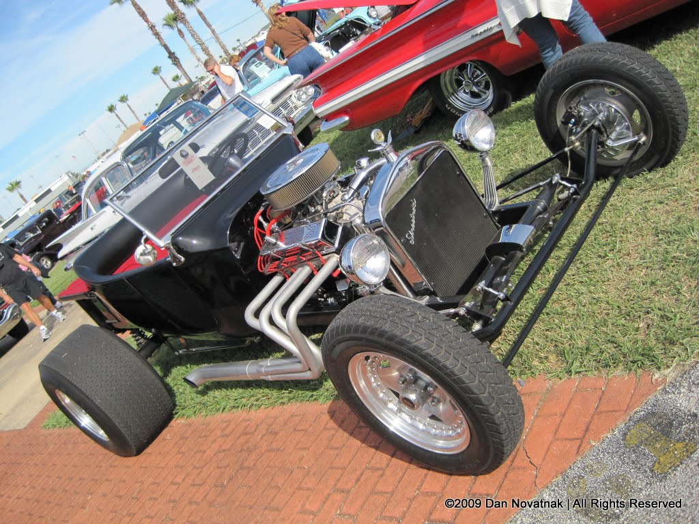
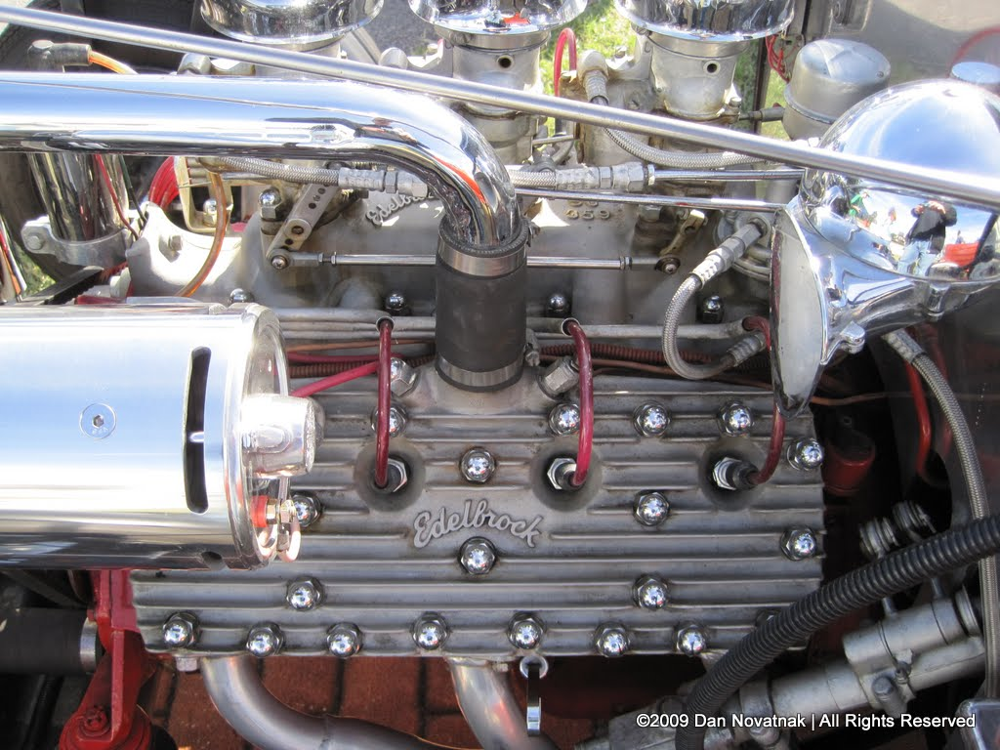
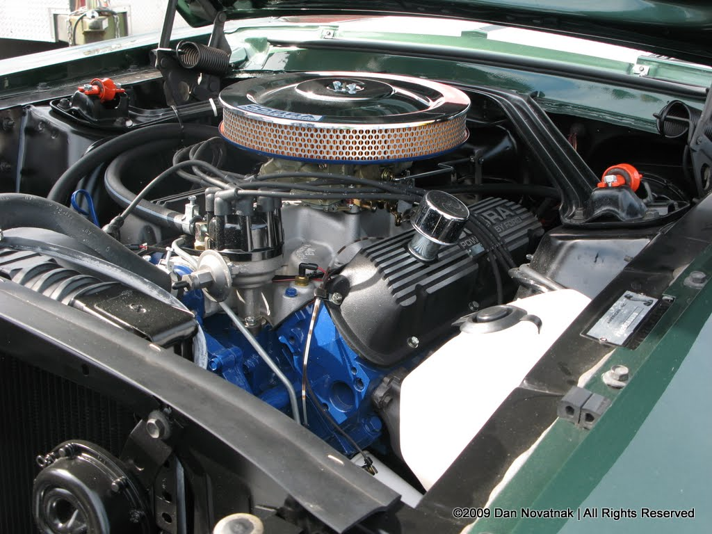
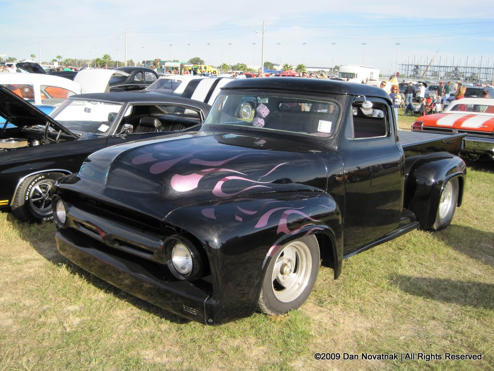

There is a contemporary movement of traditional hot rod builders, car clubs and artists who have returned to
the roots of hot rodding as a lifestyle. This current traditional hot rod culture is exemplified in a whole
new breed of traditional hot rod builders, artists and styles, as well as classic style car clubs like The
Road Devils, The Deacons, The Shifters, and The Dragoons. Events like Viva Las Vegas, and GreaseOrama
showcase this return to traditional hot rods and the greaser lifestyle. Underground magazines like Garage,
Smokin Shutdown, Ol' Skool Rodz, Car Kulture Deluxe, Gearhead, Rolls & Pleats and BurnOut showcase this
return to traditional hot rods by covering events and people around the world.
Here are some pictures taken at the 2009 Daytona Turkey Rod Run and Car Show:



